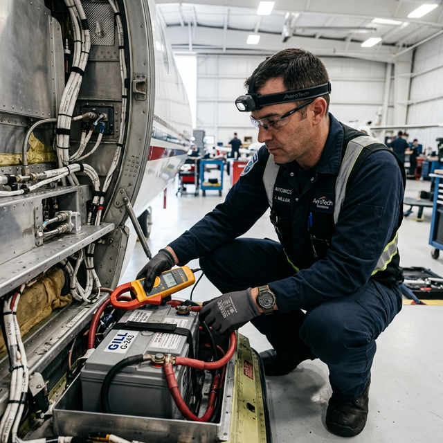

Basic fault isolation
opens/shorts/parasitic
Module Objectives
- Differentiate between the symptoms of an open circuit, a short circuit, and a parasitic draw.
- Identify the correct immediate action when a circuit breaker trips upon reset.
- Outline the ammeter-based isolation procedure for finding a parasitic battery drain.
Why Does This Matter?

A flight school owner complains that the battery in their Piper Arrow is dead every single Monday morning. Over the weekend, with the master switch fully off and the keys out, something is silently draining power. This is a parasitic draw — and alongside hard shorts and open wires, it represents one of the three foundational faults in all electrical troubleshooting. Finding it requires methodical, logic-based fault isolation, not random component swapping.
What You Need To Know
Every electrical failure in an aircraft essentially boils down to three fundamental fault types.
1. Open Circuit (The Break)
An open circuit is a physical severing of the conductive path — no current can flow.
- Symptoms: 0V measured across the load. The component is completely dead. Breakers do not trip.
- Common causes: A cut wire, a blown fuse, an accidentally tripped breaker, an open switch, or a loose connector pin that backed out of its shell.
- Diagnostic Logic: If you measure 0V across a component in a powered circuit, the fault is almost always upstream — a switch or wire between the power source and the component is open.
2. Short Circuit (The Shortcut)
A short circuit is an unintended, low-resistance path that routes current directly to ground, completely bypassing the normal load.
- Symptoms: The circuit breaker trips forcefully. If reset, it trips again instantly. Severe overcurrent flow.
- Common causes: Chafed wire insulation rubbing against an aluminum rib, a pinched wire trapped under a radio tray, or a failed internal semiconductor creating a dead short to ground.
- Diagnostic Logic: A breaker that trips the instant you reset it indicates a hard short. Do not repeatedly reset it "just to see." Every reset pushes massive current through the fault, creating heat and worsening the physical wire damage. Stop, isolate the wire run, and visually inspect for chafing.
3. Parasitic Draw (The Silent Drain)
A parasitic draw is current consumed by a component when the master electrical switch is supposed to be OFF.
- Symptoms: A completely dead battery after the aircraft sits idle for a few days. Even tiny draws (like 100 milliamps) will kill an aviation battery over a quiet weekend.
- Common causes: Faulty master relays that remain welded closed, stuck hobbs meter switches, or modern avionics (like GPS keep-alive memory) wired directly to the hot battery bus incorrectly.
Diagnosing Parasitic Draw (The Breaker Pull)
To isolate a parasitic draw silently killing a battery:
- 1. Ensure the Master Switch is OFF.
- 2. Place a highly accurate DMM ammeter in series with the battery negative cable. (You will see the tiny current draw on the screen).
- 3. Go to the cockpit and pull circuit breakers out one at a time.
- 4. Watch the ammeter. When you pull a specific breaker and the current instantly drops to zero, you have successfully isolated the circuit causing the draw.
System Visualization
graph TD
A[Symptom: Dead Battery after 3 Days] --> B[Master OFF, Battery Charged]
B --> C[Install Ammeter in Series at Battery]
C --> D[Meter shows 0.250 A draw]
D --> E[Pull Nav Breaker]
E -.->|Meter still 0.250 A| F[Pull Comm Breaker]
F -.->|Meter still 0.250 A| G[Pull Clock/Keep-Alive Breaker]
G -.->|Meter drops to 0.000 A!| H[Fault Isolated to Clock Circuit]
style D fill:#991b1b,stroke:#7f1d1d,stroke-width:2px,color:#fff
style H fill:#166534,stroke:#14532d,stroke-width:2px,color:#fff
Interactive Lab
On The Job
When a breaker trips immediately upon engagement: stop, pull the equipment out, and inspect the harness for chafing. When a battery is mysteriously dead after sitting: use the series ammeter and breaker-pulling method. When a newly installed radio won't power up at all: check that the breaker is pushed in, the power pin is in the right slot, and the ground wire is actually bolted to bare metal. Methodical isolation beats random guesswork every time.
Reference Terms
Parasitic current draw — common causes
Three main causes: (1) faulty relay contacts that remain closed when they should open, (2) stuck switches that don't fully disconnect a circuit, (3) incorrect avionics installation wiring that leaves circuits energized. All drain the battery when the master is off.
Unstable within-limits voltage
Voltage that fluctuates but stays within acceptable limits points to an intermittent ground connection or a failing voltage regulator — not a hard fault. Both cause varying resistance in the return/regulation path.
0V across component — diagnosis
If you measure 0V across a component in an active circuit, there is an open circuit UPSTREAM. No current flows through the component so no voltage appears across it. Check: blown fuse, tripped breaker, broken wire, or open switch upstream of the component.
Parasitic current draw
Current consumed by a circuit or component when the aircraft master switch is OFF. Even small amounts (50–100 mA) will drain a battery in hours or days. Causes: stuck relay contacts, latched switches, always-on avionics wiring.
Breaker trips immediately on reset
A circuit breaker that trips immediately when reset indicates a hard fault — almost always a short circuit or failed heating element. Do NOT reset repeatedly. Each reset attempt forces current through the fault, worsening damage. Isolate and inspect before further action.
New avionics won't power up — first checks
First three checks for new avionics that won't power on: (1) Circuit breaker is set (not tripped), (2) power wiring is connected to the correct bus, (3) ground wire is properly terminated with good contact to airframe. These cover 90% of new installation no-power faults.
Parasitic Draw Diagnosis
To confirm a faulty switch as a parasitic draw source, place an ammeter in series with the circuit and activate the suspect switch while monitoring current. A current increase confirms the switch is the source.
Open Circuit
A physical break in the conductive path; zero current flows; results in 0V at the load.
Short Circuit
An unintended, extremely low-resistance path bypassing the normal load; causes massive overcurrent and immediate breaker trips.
Parasitic Draw
Unintended steady current consumed with the master electrical switch turned off, resulting in drained batteries over time.
Assessment Check
Opens give you zero volts and dead loads, shorts trip circuit breakers violently, and parasitic draws kill batteries slowly — use methodical isolation like the breaker-pull test to find the exact fault. --- ---